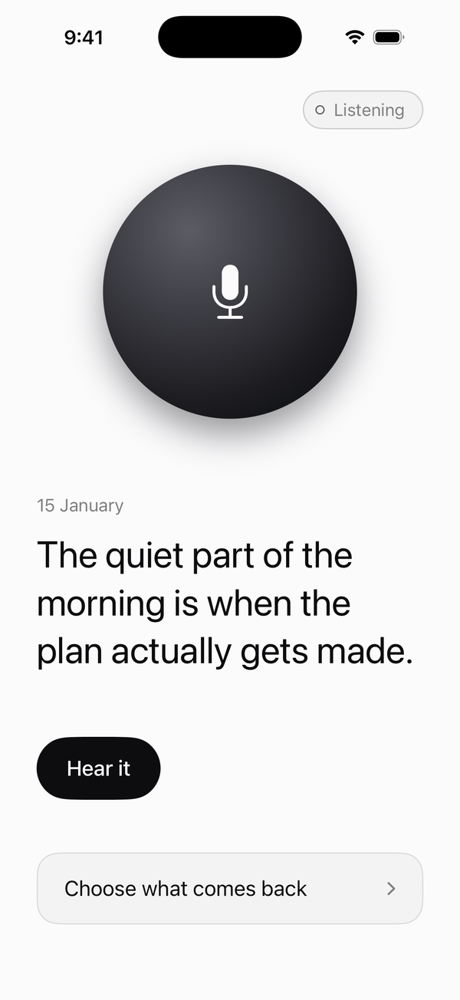
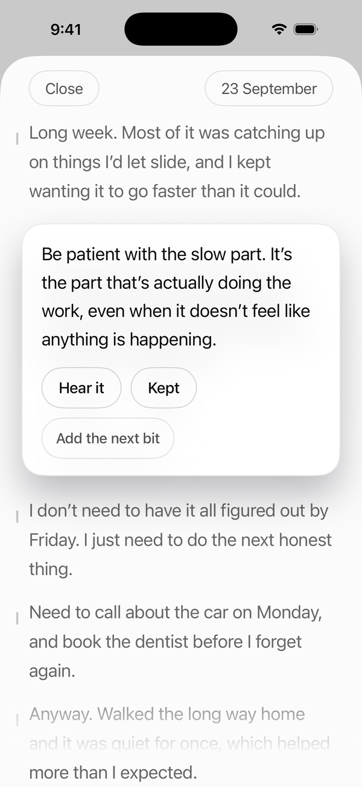
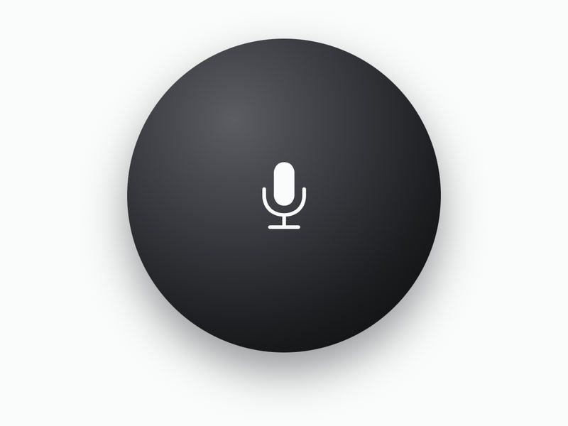
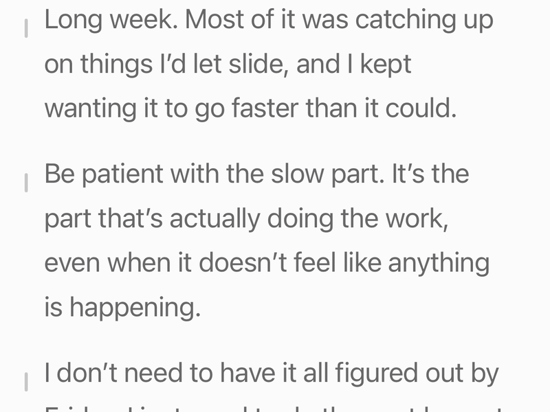
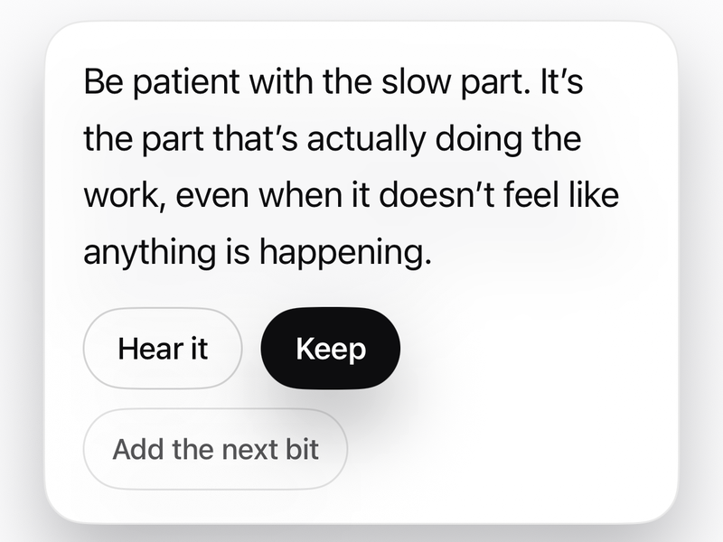
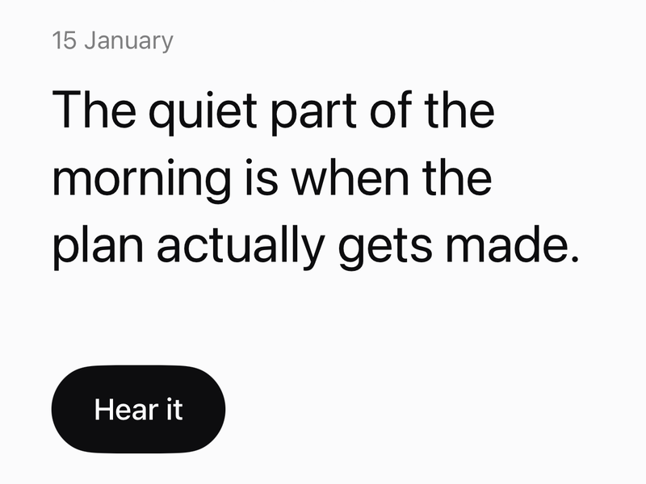

The answer you’re looking for is usually something you already said.
Second Pass keeps the thoughts you say out loud and plays one back to you later. In your own voice, at a moment you didn’t choose.


You talk into it: a thought, a reminder, something you want to hold yourself to. Later, at a moment you didn’t choose, one of them comes back.
What you say
It keeps the recording on your phone and turns it into words on the device. You read back what you said and keep the parts worth hearing again.
What comes back
Once or twice a day, while you have headphones in and your hands are busy, it plays one back. You can also open it and ask for one. There is no list to browse.
How it works
-

You talk.
Out loud, the way you would on a walk.
-

It keeps it.
Saved on your phone and turned into words there.
-

You choose.
Read back what you said. Keep the parts worth hearing again.
-

It hands it back.
In your own voice, with headphones in. Or when you ask.
What it leaves out
When it feels too quiet, that is the design working.
- No feed
- No account
- No streaks
- No server
- No stats
- No AI writing for you
- No coach
- Nothing to scroll
Your words stay yours
This app never sends your recordings anywhere.
They are turned into words on your phone, and there is no account to make. If your phone backs up to iCloud, the backup includes them, the same as any other app.
See it work
Say it. Keep it. Hear it back.
Filmed in the app as it is today. The passages are invented, and the voice is mine.
Why I built it
The nudge comes from yourself, not from an outside source.
I’d find myself looking for an answer when I’d already figured it out. Life is busy, I get off track, and that’s when I start reaching for quick dopamine, like reels. I wanted something to reach for instead.
People are capable of their own insights. They just need a way to keep them that works.
I still work in the trades. I built this on evenings and weekends, for myself first, and I’ve used it every day since the summer.
Corey
The test
For the first few days nothing comes back, because you’re filling it.
On TestFlight
It is not in the App Store.
iPhone 11 or newer
On phones older than the 14 Pro, it’s new and less tested.
Yours for good
Free, if you reply to the email on day 7.